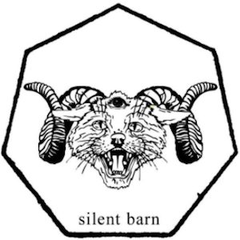
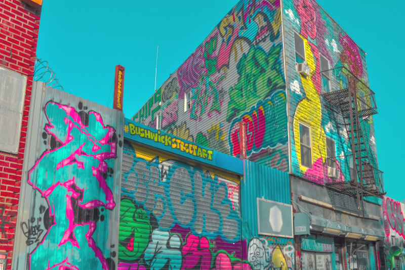

Support Educated Little Monsters New Community Space!
Donate to ELM!

A Message from the Silent Barn Collective
In 2012, the Silent Barn entered a new phase of our ongoing project by moving into a
massive three-story building at 603 Bushwick Avenue. From the start, we were aware of
the risks that this building and our intended collective organizational structure
presented, but we took on those challenges knowing that the resulting space would be
unique and vital. Despite the incredible support we have received from our community,
the financial and functional challenges of running a space on this scale have created
an unsustainable environment with no realistic way forward.
The money we raised at the end of last year, for instance, was only enough to cover one
month of rent, payroll, utilities, emergency repairs, bar stock, and other overdue
expenses. At that time, we began a round-the-clock collective attempt at tightening our
organizational structure and improving our long-term funding prospects, and tried our
hardest to sustain long enough to see it through to the end of our ten year lease. But
ultimately, the clock has run short. After a prolonged assessment of the
financial realities
of this project, the leaseholders have decided that the most responsible option left is
to end operations at 603 Bushwick as of April 30, 2018. We plan to maintain our
scheduled calendar of events through then.
Silent Barn is mostly known for our nightly shows, but our space is also home to
artists-in-residence and studio tenants, and employs dozens of staff members—all
of whom are now seeking new homes, workspaces, and jobs. The organization that will
suffer the most due to our closing is Educated Little Monsters (ELM), a grassroots
program that provides artistic outlets for youth of color and has met regularly in our
space since 2014. We feel a particular sense of urgent responsibility in encouraging
donations to ELM, whose music and arts programming serves kids of all ages, while
centering involvement from Bushwick natives—those who were living here long before the
Silent Barn opened, whose neighborhoods continue to be severely impacted by
gentrification, and whose programs will now experience further displacement.
ELM is now raising money to open a new all-ages venue and event space in collaboration
with its community partners Bushwick Street Art, The Lab Recording Studio, and Color
Scenes—the native-focused art movement that curated the murals covering our entire
three-story building, and creates opportunities for youth to paint and connect with
professional artists. Over the years, we've seen the role that D.I.Y. music venues play
within the greater machine of gentrification, and how often the communities who would
most benefit from these resources—the neighborhood's native communities—are
excluded from them entirely. ELM and their collaborators pushed open Silent Barn, and
created cultural relevance in the space for the long-standing Bushwick community. Read
ELM's full statement
here.

Photo: Color Scenes
The Silent Barn would like to extend our gratitude to ELM and the Bushwick community,
as well as everyone who has ever performed, booked or attended events here; those who
have provided generous support via donations or volunteer time; the residents, studio
artists, organizations, staff, and collective members whose tireless effort brought our
space into existence, and kept it running.
Opening an aboveground, up-to-code space in NYC (or anywhere) comes with limitless
challenges—financial, structural, emotional. Attempting to run as an open,
non-hierarchical, and collectively-directed project only complicated those challenges.
How do we all work together? What does it mean to provide a safe(r) space? How can we
responsibly serve a neighborhood while contributing to its rapid gentrification? These
are some of the ongoing conversations that have arisen or stayed with us during this
phase of the Barn. Though we often learned the hard way and in many ways still have
more learning to do, this structure fostered perpetual dialogue and growth. In time,
we'd love to share as much information and perspective as we can from our time
collectively running this space: the ways we succeeded, and where we ran into the most
trouble. We encourage future collectives to explore this model further, to continue
having these difficult conversations, and to keep investigating non-traditional forms
of organization.
Since our founding in 2006, Silent Barn has been committed to an art-first, all-ages
ethos, prioritizing independent artists, and work that isn't commercially motivated. In
our new space, our programming team facilitated events through a collaborative process,
platforming voices from a wide range of backgrounds and experiences and prioritizing
those who don't always feel comfortable in other spaces. We urge the city to keep these
values in mind and start widely supporting small, artist-run community spaces in a
material way, because these types of relationships are crucial for NYC's arts landscape.
The end of the current location does not mean the end of Silent Barn as an organization,
but we will first be taking time to reflect on our experiences at 603 Bushwick Avenue.
When we shut these doors for good, the community that has been forged around the Silent
Barn will not be gone. Keep an eye out for updates via Silent Barn's
email newsletter
and social media pages; find our final events and
volunteer opportunities
on our website and
Facebook.
And please, stand in solidarity with ELM via their
fundraiser page,
keep up with their work on
Facebook and
Instagram,
or reach out directly to
MonsterMovementBK@gmail.com.